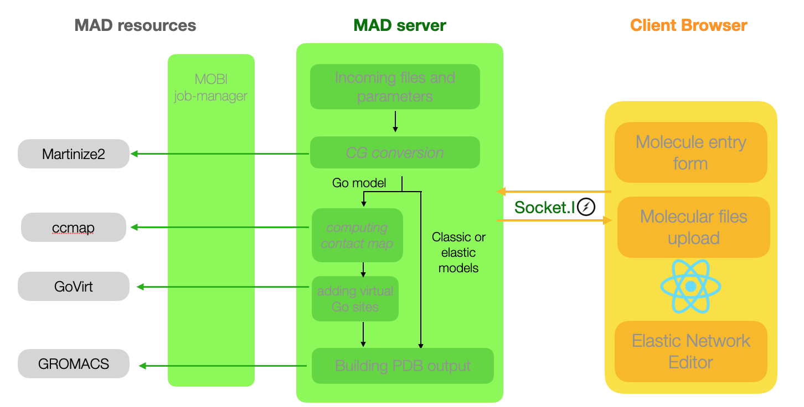

The MAD server is built on a front end to back-end architecture. The front end, which is based on the version 16.9 of the React web component framework, carries most of the steps for the submission, validation, visualization, and edition of structure.
The MOBI:jobmanager client library represents scheduled task organizations and pipelines as native JavaScript objects. This allows to setup calculations, and access to results inside the runtime of the nodeJS/express server instance.
The computational resource regroups an HPC cluster with the required software installed which stands behind a single "broker" computer running the server instance of the MOBI:job-manager service. The NoSQL database is an apache:CouchDB instance running on a dedicated computer.
MAD logic: molecule creation and addition
Adding a molecule to the database is done through the client interface for logged in users. Any registered user can submit a molecule. Depending on the existence of a previous version of the molecule with the specified force field, a new entry may be created. A GROMACS run will build coordinate files with complete connectivity. Upon its completion MAD curators will be sought for validation. Finally, all the CG structure files will be saved permanently on the MAD file system and database will be updated and changes will be reflected in the client instance.
Computational architecture of the Molecule Builer tool

The client interface will guide the user through the upload of all-atom coordinates and the setup of the coarse graining process.
Such a process may be long depending on the amount of input atoms, therefore all subsequent communications between client and server will be socket-based.
The Molecule Builder pipeline combines software around martinize2 to provide the client with all the necessary resources to further edit the CG files, making modification of distance restraints for example much simpler.
Computational architecture of the System Builder tool
The System builder accepts the following type of resources for the molecule to be inserted: CG files uploaded by the user, molecule found in the database, a molecule previously processed by the Molecule Builder.
Because the Insane execution may be long depending on the size of the system, all subsequent communications between client and server will be socket-based.
The System builder pipeline combines Insane and GROMACS to provide the client with all the necessary files to run MD simulation of the chosen system.
MAD software resources
Besides React and nodeJS, MAD makes use of the following softwares and libraries: